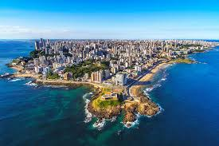

Pontos turísticos
Comidas Típicas
Você não pode sair de Salvador sem experimentar acarajé, moqueca baiana e cocada!
Galeria

A capital baiana cheia de cultura, sol e mar!
Você não pode sair de Salvador sem experimentar acarajé, moqueca baiana e cocada!